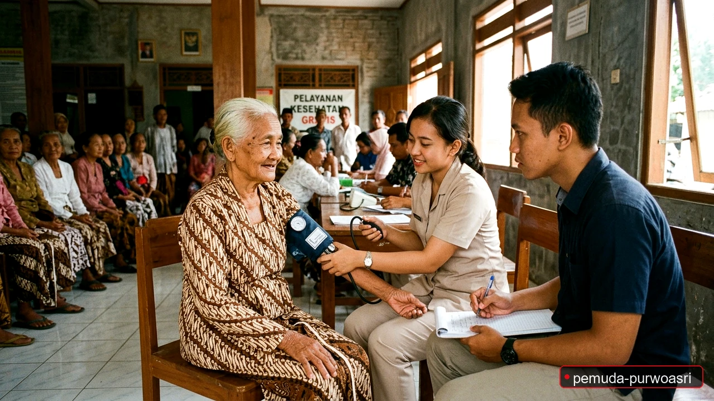
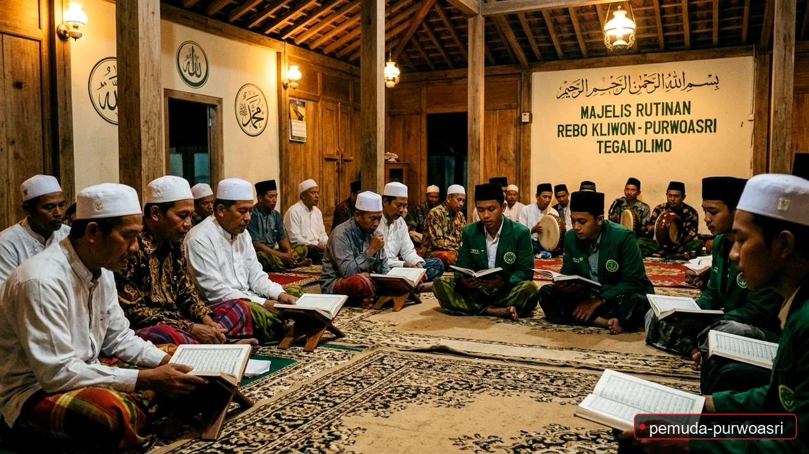
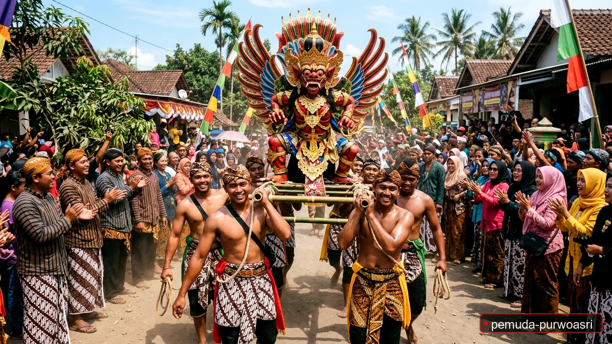
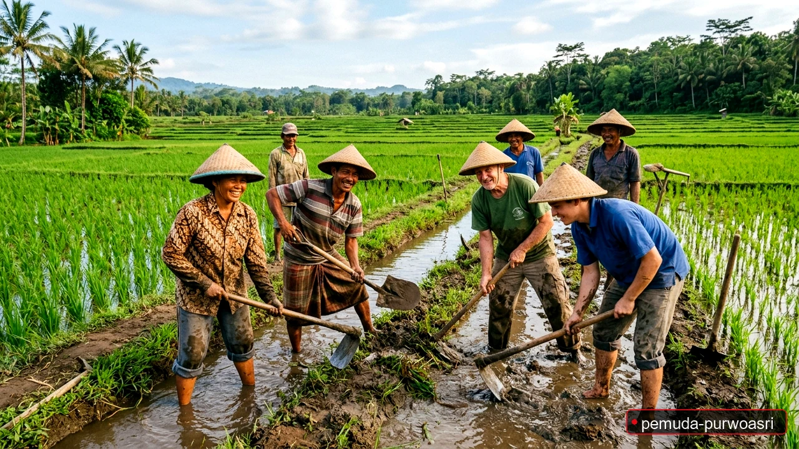
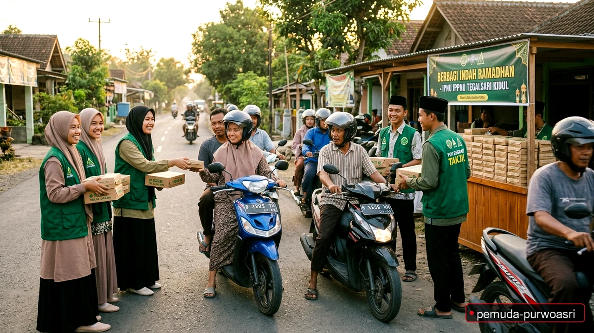
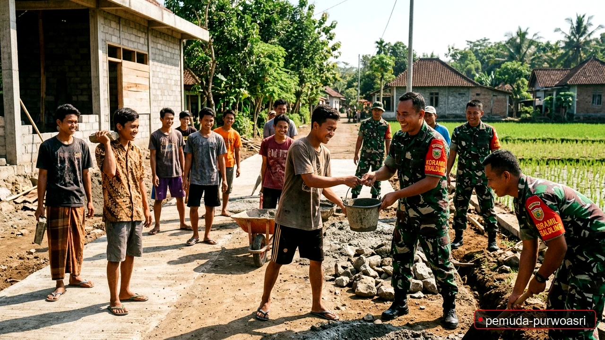

Kilas Pemuda Purwoasri
Jelajahi seluruh aksi nyata dan program unggulan Pemuda Desa Purwoasri, Kec. Tegaldlimo, Banyuwangi. Mulai dari kemeriahan Parade Sound Horeg PHBN HUT RI, kaderisasi pelajar IPNU-IPPNU, rutinan keagamaan Rabu Kliwon, pelestarian sakral Grebeg Suro Joglo Merah Putih Alas Purwo, hingga bakti sosial kesehatan dan karya bakti sinergi Koramil.
Pilih Kategori Gerakan (Season)
Klik pada Season untuk melihat episode aksi nyata pemuda di masing-masing bidang.
Tentang Organisasi Pemuda Purwoasri
Organisasi Pemuda Purwoasri adalah wadah kepemudaan resmi di bawah naungan Pemerintah Desa Purwoasri, Kecamatan Tegaldlimo, Kabupaten Banyuwangi. Organisasi ini beranggotakan generasi muda dari 3 dusun resmi (Dusun Kalisari, Dusun Tegalsari Lor, dan Dusun Tegalsari Kidul) yang berkomitmen membaktikan tenaga, pikiran, dan kreativitas demi kemaslahatan masyarakat.
Dengan mengusung nilai integritas, persatuan tanpa memandang sekat latar belakang, kami menghadirkan program kerja berkelanjutan di bidang sosial, pemeliharaan lingkungan pertanian, keolahragaan, inkubasi bisnis UMKM lokal, serta pendampingan pendidikan generasi penerus.
 HUT RI
HUT RI
Parade truk bermuatan subwoofer raksasa puncak karnaval PHBN kemerdekaan.
 ADAT SAKRAL
ADAT SAKRAL
Festival sakral Rabu Kliwon & Kamis Legi pementasan seni Reog dan doa lintas agama.

KESEHATANLayanan medis keliling tanpa biaya untuk warga lansia di pelosok 3 dusun.
Pengurus & Struktur ("The Cast & Crew")

 TOP 1
TOP 2
TOP 1
TOP 2
 TOP 3
TOP 3

TOP 4
TOP 6


Gabung Menjadi Relawan Pemuda Purwoasri
Punya keahlian di bidang olahraga, desain, wirausaha, atau ingin berkontribusi langsung dalam gotong royong memajukan desa? Pintu kami terbuka untuk seluruh pemuda-pemudi Desa Purwoasri!